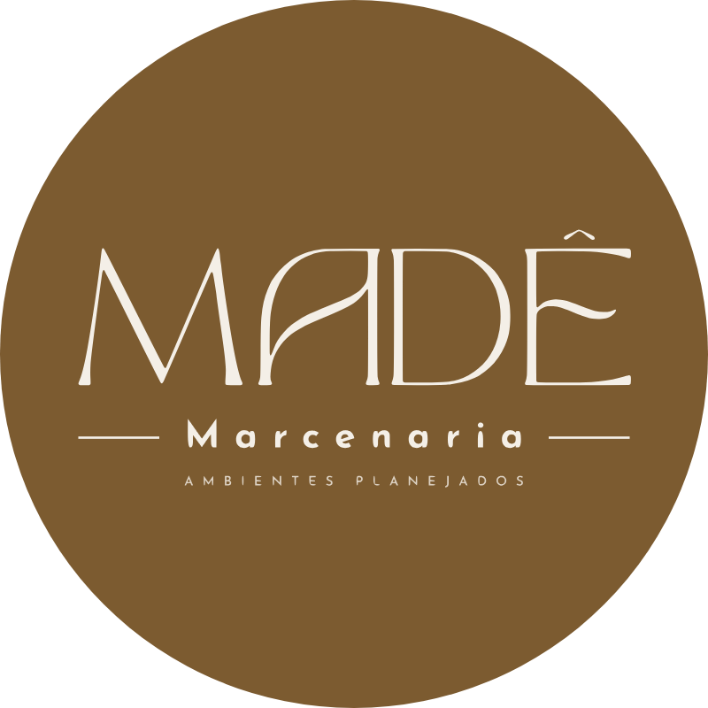

Madê Marcenaria
@made.marcenariaAmbientes planejados. Projetamos seu estilo em cada detalhe. Garopaba, Imbituba e região.
Projetos em destaque
Ver todos
Ambientes planejados. Projetamos seu estilo em cada detalhe. Garopaba, Imbituba e região.
Projetos em destaque
Ver todos